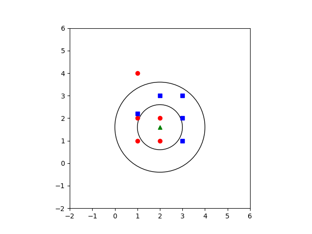

k近邻算法
k近邻算法属于监督学习的范围，即通过输入参数和训练样本的“比较”，对输入的参数进行分类。
举个现实的例子，给《非诚勿扰》的女嘉宾打分。打分必须有一个标准，例如以肤色、身高两个为标准进行打分。而怎样的肤色和身高才算漂亮？
首先，我们将肤色设置为从 1 到 10的级别，对应现实中从白到黑的肤色等级，身高也是类似；然后我们就必须给定一个根据肤色和身高对应的漂亮级别，如：A级美女（最漂亮的）、B级美女...这就形成了，肤色、身高、美丽级数这样的三个属性的表，而且表中有很很多已知参数，类似下表。
| 肤色 | 身高 | 美丽级数 |
|---|---|---|
| 3 | 165 | A |
| 6 | 170 | B |
| 2 | 160 | A |
| 5 | 179 | B |
最终，根据评分的标准，将某一个女嘉宾的数据输入，得到距离女嘉宾数据最近的美丽等级。由于女嘉宾数据并不一定和表中数据完全相同，且上述表只是参考，我们提出一个划分范围（即k）。根据k的取值，我们得出的结果有可能不同。
即女嘉宾甲处在A级美女和B级美女的交接处，如果k=1，那么她可能归为A级，但k=2,她可能归为B级。
因此，在实际应用中，k的取值往往需要不断试验得出。如图：

代码
- 第一个分类器函数
def classify0(inX, dataSet, labels, k):
#inX是用于分类的输入向量(即未知量)
#dataSet是输入的训练样本集
#labels是标签向量（返回值在标签向量中选择)
#k是用于选择最近邻居的数目
dataSetSize = dataSet.shape[0]
#shape[0]返回数组的行数
diffMat = tile(inX, (dataSetSize,1)) - dataSet
#将inX扩充为和训练样本数组相同大小
sqDiffMat = diffMat**2
sqDistances = sqDiffMat.sum(axis=1)
#sum(axis = 1)返回每一行的和
distances = sqDistances**0.5
sortedDistIndicies = distances.argsort()
#返回的是数组值从小到大的索引值,是数组类型的
classCount={}
#生成一个字典
for i in range(k):
voteIlabel = labels[sortedDistIndicies[i]]
classCount[voteIlabel] = classCount.get(voteIlabel,0) + 1
#dict.get(key, default=None)
#返回指定键的值，如果值不在字典中返回default值
#在前k个最近的数据点中，对应标签的内容和数目，即距离输入量最近的类别A,类别B等的数目
sortedClassCount = sorted(classCount.iteritems(), key=operator.itemgetter(1), reverse=True)
#根据字典内值得大小对字典进行排序，reverse=True是降序
return sortedClassCount[0][0]